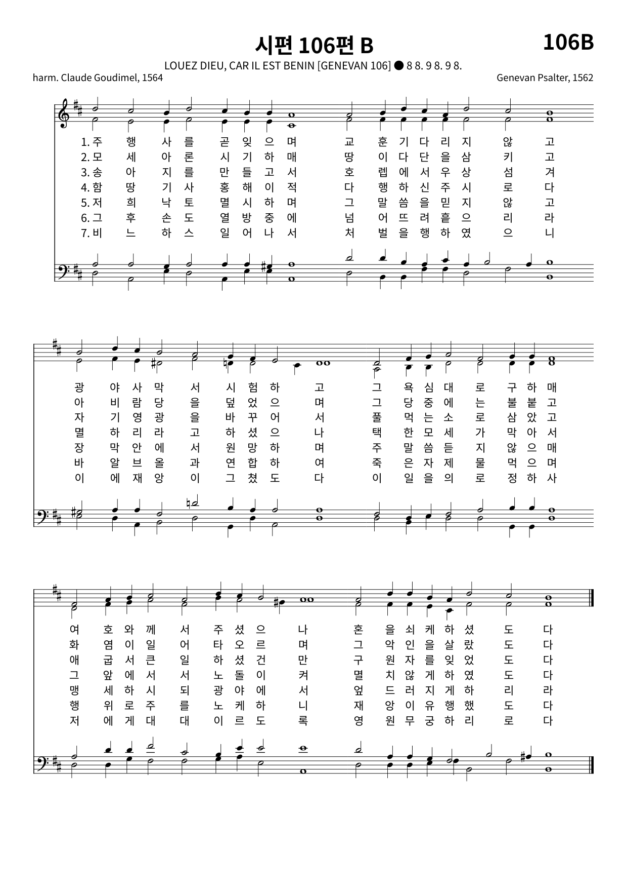

Psalm 106B
LOUEZ DIEU, CAR IL EST BENIN [GENEVAN 106] · 8 8. 9 8. 9 8.
English title: Oh, Thank the LORD, Bring Him Your Praise
Tune: Genevan Psalter, 1562 · Harmony: Claude Goudimel, 1564 · Lyrics: Korean adaptation of Psalm 106 from the Korean Revised Version (AI draft adaptation · not yet theologically reviewed) · 7 stanzas
Psalm 106 is divided into 3 tunes: A B C · This tune contains stanzas 6–12 of the Psalm 106 lyrics.
Score PDF MusicXML (for printing) MusicXML (for accompaniment, with prelude and repeats) Read Psalm 106 (Korean Revised Version)
Score
← Psalm 106A ListAccompaniment (in preparation)Psalm 106C →
Lyrics (Korean)
Stanza 1
주 행사를 곧 잊으며
교훈 기다리지 않고
광야 사막서 시험하고
그 욕심대로 구하매
여호와께서 주셨으나
혼을 쇠케 하셨도다
주 행사를 곧 잊으며
교훈 기다리지 않고
광야 사막서 시험하고
그 욕심대로 구하매
여호와께서 주셨으나
혼을 쇠케 하셨도다
Stanza 2
모세 아론 시기하매
땅이 다단을 삼키고
아비람 당을 덮었으며
그 당 중에는 불 붙고
화염이 일어 타오르며
그 악인을 살랐도다
모세 아론 시기하매
땅이 다단을 삼키고
아비람 당을 덮었으며
그 당 중에는 불 붙고
화염이 일어 타오르며
그 악인을 살랐도다
Stanza 3
송아지를 만들고서
호렙에서 우상 섬겨
자기 영광을 바꾸어서
풀 먹는 소로 삼았고
애굽서 큰 일 하셨건만
구원자를 잊었도다
송아지를 만들고서
호렙에서 우상 섬겨
자기 영광을 바꾸어서
풀 먹는 소로 삼았고
애굽서 큰 일 하셨건만
구원자를 잊었도다
Stanza 4
함 땅 기사 홍해 이적
다 행하신 주시로다
멸하리라고 하셨으나
택한 모세가 막아서
그 앞에 서서 노 돌이켜
멸치 않게 하였도다
함 땅 기사 홍해 이적
다 행하신 주시로다
멸하리라고 하셨으나
택한 모세가 막아서
그 앞에 서서 노 돌이켜
멸치 않게 하였도다
Stanza 5
저희 낙토 멸시하며
그 말씀을 믿지 않고
장막 안에서 원망하며
주 말씀 듣지 않으매
맹세하시되 광야에서
엎드러지게 하리라
저희 낙토 멸시하며
그 말씀을 믿지 않고
장막 안에서 원망하며
주 말씀 듣지 않으매
맹세하시되 광야에서
엎드러지게 하리라
Stanza 6
그 후손도 열방 중에
넘어뜨려 흩으리라
바알브올과 연합하여
죽은 자 제물 먹으며
행위로 주를 노케 하니
재앙이 유행했도다
그 후손도 열방 중에
넘어뜨려 흩으리라
바알브올과 연합하여
죽은 자 제물 먹으며
행위로 주를 노케 하니
재앙이 유행했도다
Stanza 7
비느하스 일어나서
처벌을 행하였으니
이에 재앙이 그쳤도다
이 일을 의로 정하사
저에게 대대 이르도록
영원 무궁하리로다
비느하스 일어나서
처벌을 행하였으니
이에 재앙이 그쳤도다
이 일을 의로 정하사
저에게 대대 이르도록
영원 무궁하리로다